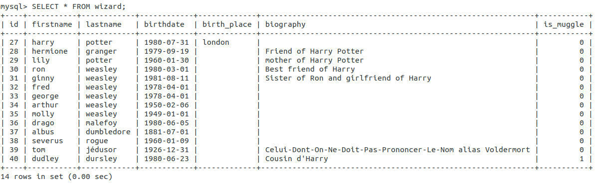
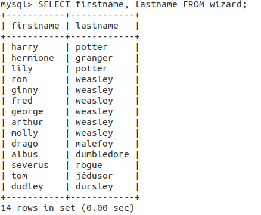
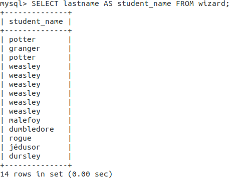

02 - Récupérer des informations avec SELECT
Objectifs
- Connexion à la base de données, importation de données
- Récupération des données avec SELECT
- Utilisation de différentes clauses pour filtrer et trier les résultats
Introduction
Une base de données permet de stocker toutes sortes d'informations (texte, nombres, dates, booléens, etc...) utiles à tes applications. Tu vas découvrir comment interagir avec cette base de données et notamment récupérer les informations dont tu as besoin.
Prêt pour une nouvelle leçon de sorcellerie ?
Sommaire
Comment récupérer des données ?
Précédemment, tu as vu comment créer et se connecter à une base de données, ainsi que la création de tables. Tu vas maintenant voir comment récupérer des données déjà présentes (tu verras plus en détail comment ajouter des données dans une future quête). Pour le moment, exécute la requête suivante dans ta base wild_db_quest précédemment créée :
INSERT INTO wild_db_quest.wizard
(firstname, lastname, birthday, birth_place, biography, is_muggle)
VALUES
('harry', 'potter', '1980-07-31', 'london', '', '0'),
('hermione', 'granger', '1979-09-19', '', 'Friend of Harry Potter', '0'),
('lily', 'potter', '1960-01-30', '', 'mother of Harry Potter', '0'),
('ron', 'weasley', '1980-03-01', '', 'Best friend of Harry', '0'),
('ginny', 'weasley', '1981-08-11', '', 'Sister of Ron and girlfriend of Harry', '0'),
('fred', 'weasley', '1978-04-01', '', '', '0'),
('george', 'weasley', '1978-04-01', '', '', '0'),
('arthur', 'weasley', '1950-02-06', '', '', '0'),
('molly', 'weasley', '1949-01-01', '', '', '0'),
('drago', 'malefoy', '1980-06-05', '', '', '0'),
('albus', 'dumbledore', '1881-07-01', '', '', '0'),
('severus', 'rogue', '1960-01-09', '', '', '0'),
('tom', 'jédusor', '1926-12-31', '', 'Celui-Dont-On-Ne-Doit-Pas-Prononcer-Le-Nom alias Voldermort', '0'),
('dudley', 'dursley', '1980-06-23', '', 'Cousin d\'Harry', '1');
Cela va ajouter des données dans la table wizard.
Si la requête ne fonctionne pas correctement, c’est sans doute que la structure de ta table est incorrecte.
Voir la solution
DROP TABLE wild_db_quest.wizard;
CREATE TABLE wild_db_quest.wizard (
id INT NOT NULL AUTO_INCREMENT,
firstname VARCHAR(100) NOT NULL,
lastname VARCHAR(100) NOT NULL,
birthday DATE DEFAULT NULL,
birth_place VARCHAR(255) DEFAULT NULL,
biography TEXT DEFAULT NULL,
is_muggle BOOLEAN DEFAULT 0,
PRIMARY KEY (id)
);
Puis relance la requête INSERT INTO précédente.
Le mot-clé qui va t’intéresser pour récupérer des données dans une BDD est SELECT.
Une requête SELECT se décompose de la manière suivante :
SELECT <champs> FROM <table>;
-
champs : les champs que tu souhaites récupérer, séparés par des virgules s’il y en a plusieurs. Si tu souhaites récupérer tous les champs d’un tuple, tu peux utiliser le raccourci
*. Ne récupère pas tous les champs s’il n’y en a que certains qui t’intéressent, afin d’optimiser les performances. -
table : la table interrogée
Par exemple,
SELECT * FROM wizard;
Permet de récupérer toutes les données de tous les sorciers. Comme tu le vois sur l’image suivante, les résultats s’affichent sous forme d’un tableau dans ton terminal.

SELECT firstname, lastname FROM wizard;
Permet de récupérer uniquement le nom et le prénom de tous les sorciers

Certains mots sont réservés par MySQL. Il est parfois plus sécurisé d'entourer tes noms de tables de "`" que l'on appelle backticks (attention, c’est différent de la simple quote, le backtick se fait avec les touches Alt Gr + 7 sur un clavier azerty classique). Par exemple, une table nommée character pose problème car le mot-clé est réservé. En l’écrivant ainsi `character` dans ta requête SQL, tu n'auras pas d'erreur à l’exécution.
SELECT lastname AS student_name FROM wizard;
Permet de récupérer le nom des sorciers, en appliquant un alias (renommage temporaire) à la colonne "lastname". L’utilisation des alias peut te sembler inutile devant un exemple simple comme celui-là, mais cela est très utilisé dans des cas un peu plus complexes, pour lever certaines ambiguïtés dans les noms des champs. Tu pourras aussi attribuer des alias aux noms des tables.

Cheat-Sheet à garder de côté, elle te servira tout au long des quêtes
Plus de détails sur la commande SELECT
La clause WHERE
Pour récupérer uniquement les prénoms et dates de naissance des membres de cette famille, tu feras :
SELECT firstname, birthday FROM wizard WHERE lastname='Weasley';
Tu obtiens ainsi une sous-sélection de lignes ET de colonnes.
Il est également possible de réaliser des conditions plus complexes (tu trouveras plus de détails sur ces différents opérateurs de comparaison dans les ressources :
- une valeur égale
=ou différente!= - une valeur supérieure
>(ou égale>=), inférieure<(ou égale<=) - une valeur parmi plusieurs possibles avec
IN - une valeur numérique (ou une date) dans une fourchette avec
BETWEEN xx AND yy - une chaîne commençant par ou finissant par avec
LIKEet le joker% - une valeur
IS NULLouIS NOT NULL
Tu peux aussi combiner plusieurs conditions avec des opérateurs comme AND ou OR.
Voici un exemple un peu plus complexe, permettant de récupérer tous les sorciers dont le nom commence par “Weas” et qui sont nés entre les 1er janvier 1970 et 2000 :
SELECT firstname, birthday
FROM wizard
WHERE
lastname LIKE 'Weas%' AND
birthday BETWEEN '1970-01-01' AND '2000-01-01';
avec également plus d’infos sur les opérateurs associés. En bas de page, tu verras des liens renvoyant vers des documentations plus détaillées pour les opérateurs un peu plus complexes que sont IN LIKE ou BETWEEN. Regarde également ces pages importantes.
un ensemble de conventions à suivre.
ORDER / LIMIT
C’est là que la clause LIMIT entre en scène. Sa syntaxe est :
SELECT <champs> FROM <table> LIMIT <nb_results>;
Par exemple, la requête suivante ne récupérera QUE les 5 premiers sorciers correspondant à la requête (qui peut également contenir une clause WHERE). S’il y a plus de résultats, les suivants ne seront pas retournés.
SELECT * FROM wizard LIMIT 5;
La clause LIMIT peut également être associée à la clause OFFSET, très utile pour une pagination. Par défaut, la LIMIT renvoie les résultats à partir du premier trouvé (le résultat 0). L’offset permet d’indiquer que la LIMIT s’appliquera à partir du Nième résultat trouvé.
Par exemple, cette requête renvoie les 5 premiers résultats trouvés, à partir du 20ème (concrètement les lignes 21 à 25) :
SELECT * FROM wizard LIMIT 5 OFFSET 20;
Une erreur fréquente consiste à écrire LIMIT 25 OFFSET 20, pensant retourner les résultats 21 à 25, alors que cela te renverrait les résultats 21 à 45 !)
Un peu de tri
SELECT firstname, lastname FROM wizard ORDER BY lastname ASC, birthday DESC;
Cette requête te renverra tous les sorciers, classés par ordre alphabétique de nom, PUIS du plus jeune au plus vieux pour les membres d’une même famille. Note également que tu n’es pas obligé d’afficher les champs servant à trier (ici tu ne récupères pas la date de naissance, mais elle te sert tout de même à trier les résultats)
Cette clause peut, là encore, être associée au WHERE et/ou à une LIMIT. Dans ce cas, l’ordre d’appel des clauses est important. Tu devras d’abord faire un WHERE, puis un ORDER BY pour finir par le LIMIT/OFFSET. Par exemple, la requête suivante te renverra les trois plus jeunes membres de la famille Weasley :
SELECT * FROM wizard WHERE lastname='Weasley' ORDER BY birthday DESC LIMIT 0,3;
Suite du tutoriel commencé dans la précédente quête. Regarde la vidéo “querying the table” et réalise le court challenge qui suit.
Challenge
Trouve les requêtes SQL pour :
- Récupère tous les champs pour les sorciers nés entre 1975 et 1985.
- Le prénom uniquement des sorciers dont le prénom commence par la lettre ‘H’.
- Les prénoms et noms de tous les membres de la famille ‘Potter’, classés par ordre de prénom.
- Le prénom, nom et date de naissance du plus vieux sorcier (doit fonctionner quelque soit le contenu de la table).
Poste tes 4 requêtes SQL et leurs résultat en solution.
Critères de validation
- Les 4 requêtes SQL et les résultats correspondent aux critères données.
- Tous les champs pour les sorciers nés entre 1975 et 1985 :
select
*
from
wizard
where
is_muggle = 0
and birthday between '1975-01-01' and '1985-12-31';
+----+-----------+----------+------------+-------------+---------------------------------------+-----------+
| id | firstname | lastname | birthday | birth_place | biography | is_muggle |
+----+-----------+----------+------------+-------------+---------------------------------------+-----------+
| 1 | harry | potter | 1980-07-31 | london | | 0 |
| 2 | hermione | granger | 1979-09-19 | | Friend of Harry Potter | 0 |
| 4 | ron | weasley | 1980-03-01 | | Best friend of Harry | 0 |
| 5 | ginny | weasley | 1981-08-11 | | Sister of Ron and girlfriend of Harry | 0 |
| 6 | fred | weasley | 1978-04-01 | | | 0 |
| 7 | george | weasley | 1978-04-01 | | | 0 |
| 10 | drago | malefoy | 1980-06-05 | | | 0 |
+----+-----------+----------+------------+-------------+---------------------------------------+-----------+
7 rows
- Le prénom uniquement des sorciers dont le prénom commence par la lettre ‘H’ :
select
firstname
from
wizard
where
is_muggle = 0
and firstname like 'H%';
+-----------+
| firstname |
+-----------+
| harry |
| hermione |
+-----------+
2 rows
- Les prénoms et noms de tous les membres de la famille ‘Potter’, classés par ordre de prénom :
select
firstname,
lastname
from
wizard
where
lastname = 'Potter'
order by
firstname;
+-----------+----------+
| firstname | lastname |
+-----------+----------+
| harry | potter |
| lily | potter |
+-----------+----------+
2 rows
- Le prénom, nom et date de naissance du plus vieux sorcier :
select
firstname,
lastname,
birthday
from
wizard
where
is_muggle = 0
order by
birthday
limit 1;
+-----------+------------+------------+
| firstname | lastname | birthday |
+-----------+------------+------------+
| albus | dumbledore | 1881-07-01 |
+-----------+------------+------------+
1 row
Ressources partagées sur cette quête
- Pour reviser et s'entrainer aux requêtes SQLhttps://sqlzoo.net/wiki/SQL_Tutorial
- Un mémo bien fait sur les requêtes, fonctions t type de données SQLhttps://sql.sh/ressources/document/mysql-aide-memoire-sql.pdf